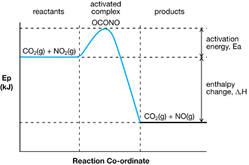
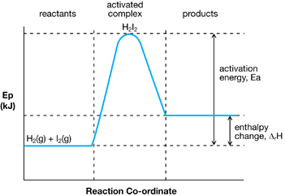

Module 2—Thinking Energy
 Lesson Summary
Lesson Summary
In Lesson 2 you considered the following question:
- Why is energy needed to start an exothermic reaction?
You learned about activation energy and the events that occur during a chemical reaction. You learned that certain conditions, including sufficient particle speed and orientation, are necessary for a reaction to proceed. Energy of activation is a threshold that, once met, allows molecules to collide with sufficient energy to react.
In this lesson you also learned how the concept of activation energy integrates into your understanding of enthalpy changes for both endothermic and exothermic changes in chemical reactions. Finally you learned how to view enthalpy changes as a change in the bond energies between reactant and product particles.
Potential Energy Diagram for an Exothermic Reaction
Potential Energy Diagram for an Endothermic Change
 
In the next lesson you will further your understanding of activation energy and its impact on chemical processes as you learn about catalysts. You will apply your understanding of catalysts as you further assess the production of biodiesel through a chemical reaction in which sodium hydroxide is used as a catalyst.